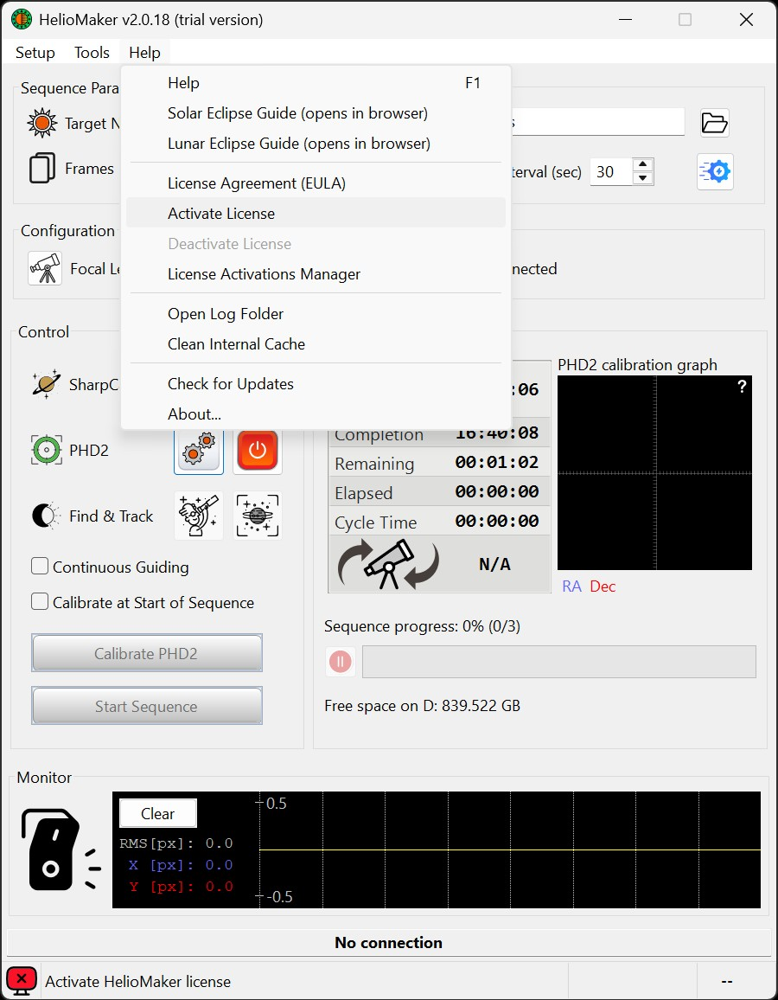
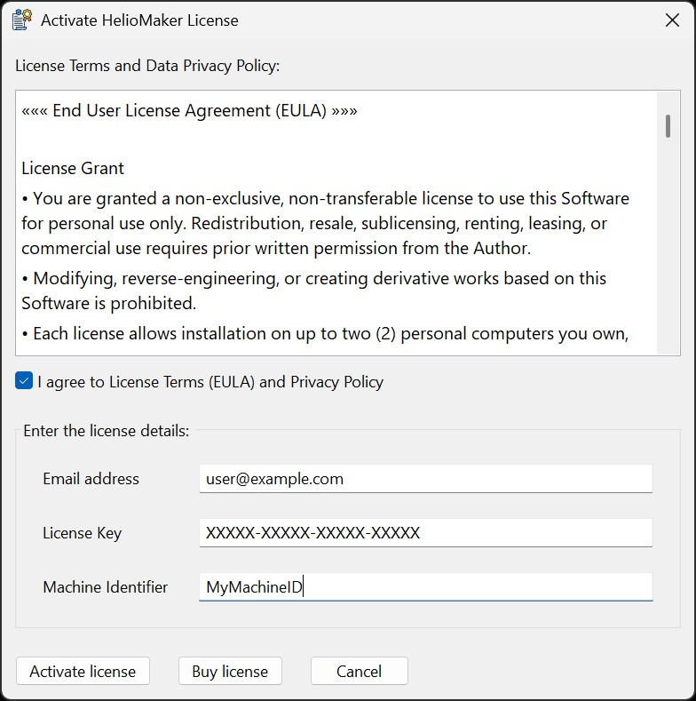
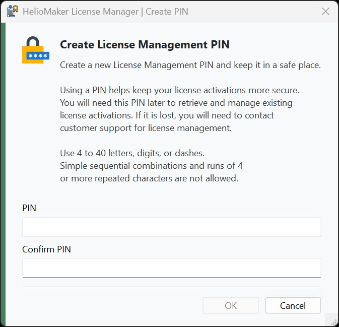

HelioMaker operates in a restricted trial mode until a valid license is activated. To unlock its full functionality, follow these steps. An active internet connection is required for activation and for any subsequent license management tasks.
If you upgrade from an older HelioMaker version that did not yet support License Management PIN protection, the newer version may prompt you to create a PIN once per HelioMaker session until it is set successfully for that license.
Steps to Activate Your License
Open the License Activation Tool:
Launch HelioMaker and click on the Help menu.
Select Activate License from the dropdown menu.

Enter License Details:
In the License Activation dialog, provide the following details:
Email Address: Enter the email address used for purchasing the license.
License Key: Enter the unique license key sent to your email after purchase.
Machine Identifier: The system will prefill the current PC's machine name. You may keep it as is or modify it for license association.

Review License Terms:
Read the presented End User License Agreement (EULA) and Data Privacy Policy.
Tick the checkbox next to I agree to License Terms (EULA) and Privacy Policy to confirm your acceptance.
Activate the License:
Click the Activate License button to begin the activation process.
Ensure your system is connected to the internet as an active internet connection is required.
Create a License Management PIN if Prompted:
After a successful activation, HelioMaker may prompt you to create a License Management PIN for this license if one has not been set yet.
This prompt is shown after activation so you can secure access to the License Activations Manager right away.
Choose a PIN that uses 4 to 40 letters, digits, or dashes.
Simple sequential combinations such as 1234 or ABCD, and runs of repeated characters such as 1111 or AAAA, are not allowed.

Wait for Confirmation:
The activation process may take a few moments to complete.
Once successful, HelioMaker will transition to the full version, unlocking all features.
The License Management PIN protects access to the License Activations Manager and is required later when retrieving or managing existing activations.
If you skip PIN creation, HelioMaker may ask again in a later session until the PIN is successfully created for that license.
Important Notes
Security Notice: Your product and license keys are for your personal use only. To maintain the security of your license, please avoid sharing these keys or your associated email address with others. Unauthorized sharing may lead to the suspension or termination of your license.
An active internet connection is required for all license operations.
Keep your License Management PIN in a safe place. You will need it to view activation records and to deactivate activations from the License Activations Manager.
Without license activation, HelioMaker remains in restricted trial mode.
Each license allows installation and activation on up to two personal computers.
If you plan to use HelioMaker from a different user account on the same machine:
Perform a one-time license activation from that account using the same license key, email, and Machine Identifier.
Using the software on the same machine from a different account will still count as a single license activation.
If activation or PIN setup fails, ensure the provided details are correct and that your internet connection is stable.